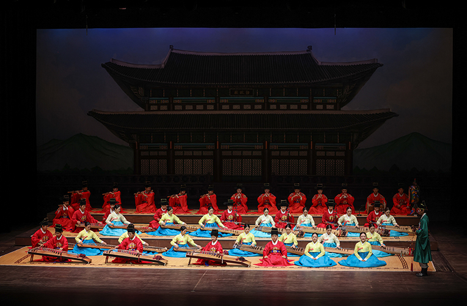

국악대학축제 <지음知音>
- 일시
- 10. 13.(금) 19:30(총 1회)
- 장소
- 연악당
- 관람료
- 전석무료
- 출연진/연출진
- 부산·영남권 3개교(경북대, 부산대, 영남대) 대학생
- 관람연령
- 취학아동이상
부산․영남 지역 국악 전공 대학생들의 교류의 장
부산․영남 지역 국악 전공 대학생들이 펼치는 교류의 장. 각 대학의 樂은 하나의 마음과 길로 통하는 연주는 맞닿아있다. 젊은 학우들의 연주를 통해 오랜 친구처럼. 말하지 않아도 음악으로써 서로의 마음을 알아주고, 공감하고 화합할 수 있는 소중한 시간되길 바란다.
